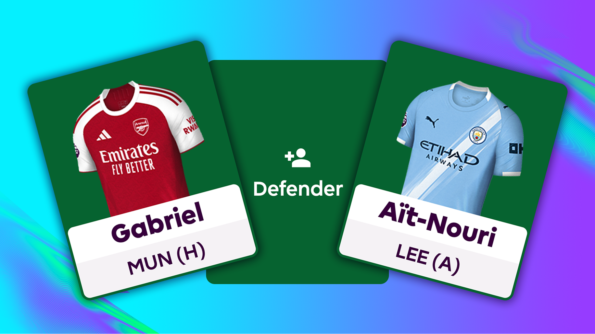
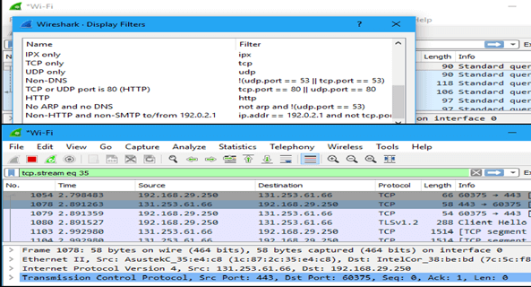
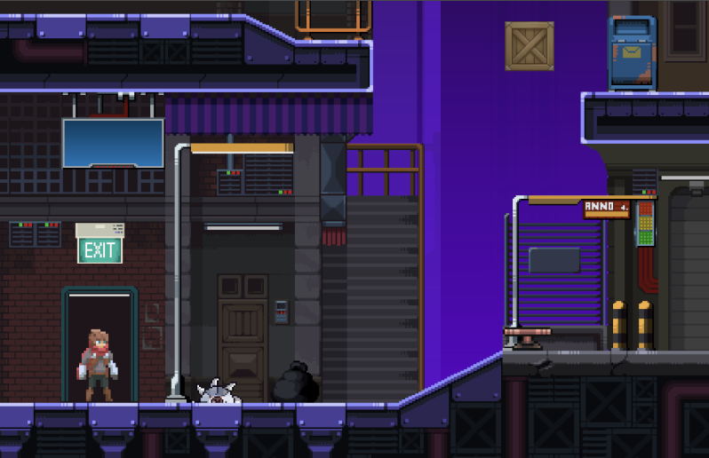
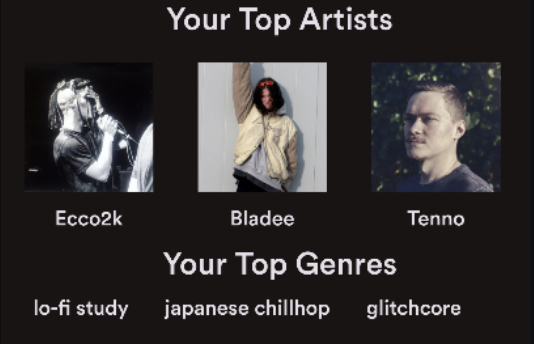

Hello! I’m Wesley Jeong, a software engineer and recent Computer Science graduate from Georgia Tech. I'm currently a Software Engineer Intern on Kargo AI's Edge team, where I work on system optimization and performance tuning.
With a solid foundation in databases, software architecture, and game development, I’m always excited to tackle new challenges and contribute to the tech community. Outside of programming, I enjoy playing soccer, drawing, and reading manga.
Full-stack app that scores 600+ Fantasy Premier League players and recommends top picks

CCSDS-style packetization and real-time video streaming over UDP with sequence tracking, loss detection, and protocol debugging tools

Single-player 2D puzzle platformer game involving time-freezing mechanics

Personal Spotify music insight dashboard application

June 2026 – Present · San Francisco, CA
Cut image-retrieval latency on Kargo's multi-camera pipeline with a caching layer, and built internal tooling for testing, deployment, and configuration automation.
May 2025 – July 2025 · Pasadena, CA
Worked on real-time telemetry and video streaming systems for spacecraft subsystem monitoring and debugging.
May 2024 – July 2024 · Seoul, South Korea
Built backend services and automation tooling for client communications using Spring Boot and MySQL.
January 2024 – May 2025 · Atlanta, GA
Developed gameplay systems for a Unity-based strategy game simulating power grid operations in a collaborative research team.
2023 – 2026 · Atlanta, GA
GPA 3.85. Threads in Information Internetworks and Media.
2022 – 2023 · Champaign, IL
Started in Chemistry before transferring to Georgia Tech for Computer Science.
2018 – 2022 · Seoul, South Korea
Completed the International Baccalaureate Diploma Programme.